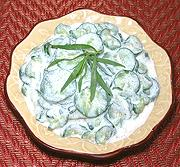

|
Cucumber Cream SaladFrance - Concombres à la Crème | ||||
| Serves: Effort: Sched: DoAhead: |
5 salad ** 1 hr Yes |
A pleasant variation of the cucumber salad - the usual oil being replaced by cream. The lemon juice curdles the cream so it coats the cucumbers well. See also the Cucumber Salad with Cream version. | |||
|
2 4 3 4 3/4 1/4 |
# t T c t |
Cucumbers (1) Salt Tarragon sprigs Lemon Juice Whipping Cream Pepper |
Salting and wringing out the Cucumbers is to prevent the salad from becoming watery. Make - (1 hr - 20 min work)
|